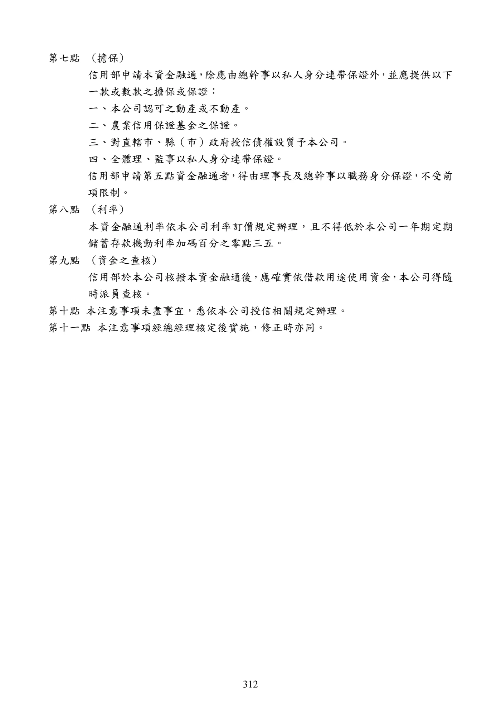

全國農業金庫作業規範附錄
手冊頁：309 PDF頁：311／359

展開查看PDF原始文字層
複雜表格欄列可能因文字層順序失真，請搭配原頁預覽查閱。
附錄一、全國農業金庫辦理農會漁會信用部資金融通作業規範 94 年 5 月 17 日第 1 屆第 7 次董事會通過 100 年 11 月 15 日第 2 屆第25 次董事會修正通過 111 年 11 月 16 日第 5 屆第12 次董事會修正通過 112 年 8 月23 日第 5 屆第 21 次董事會修正通過 第 一 條 全國農業金庫(以下稱本公司)依據農業部令頒「農會漁會信用部業 務輔導資金融通及餘裕資金轉存辦法」第十一條第四項規定特訂定 本作業規範。 第 二 條 農會、漁會信用部業務上所需一般性或季節性週轉資金得向本公司 申請融通，融通最高限度，不得逾銀行法有關規定，並受該農會、 漁會會員代表大會決議之對外借款最高金額限制。 第 三 條 農、漁會信用部發生存款異常提領等重大偶發事件，致有流動性資 金需要，經以全部存單向本公司及其他收受轉存款機構辦理質借或 解約，仍不敷其資金需求時，該農會、漁會得依本作業規範向本公 司申請緊急融通，其總額度應受該農會、漁會會員代表大會決議之 對外借款最高金額之限制。 前項存單質借金額得由農會、漁會會員代表大會決議不計入對外借 款最高限額。 第 四 條 農會、漁會向本公司申請緊急融通，應由該農會、漁會報請直轄市 或縣（市）政府召集本公司開會研商，並作成融通決議後向本公司 提出申請。召集機關得報請中央主管機關與中央存款保險公司派員 參加融通會議。 第 五 條 本公司辦理農會、漁會信用部緊急融通後，應即陳報中央主管機關 及中央銀行備查；融通金額如逾銀行法第三十三之三授權規定需專 案處理者，應先報經中央主管機關洽商中央銀行後核准辦理。 第 六 條 農會、漁會申請緊急融通，以提供擔保品為原則，其理事、監事及 總幹事，依本公司融通條件，須提供擔保品及保證人時，應配合辦 理。 第 七 條 本公司因辦理農會、漁會緊急融通，致有資金需要時，得向中央銀 行申請轉融通。 第 八 條 農會、漁會申請融通時，應以書面，並備具下列表冊向本公司提出 申請： 一、農會、漁會信用部最近日計表。 二、農會、漁會信用部上月份資產負債表及損益表。 三、農會、漁會上年度資產負債表及損益表。 四、會員代表大會有關對外借款最高限額之決議及提供財產為擔保
手冊頁：310 PDF頁：312／359

展開查看PDF原始文字層
複雜表格欄列可能因文字層順序失真，請搭配原頁預覽查閱。
品之決議。 五、其他經本公司要求徵取之表冊、文件 如係申請緊急融通時除前項書件外，須另檢附下列文件： 一、理事會有關申請緊急融通之決議。 二、全體理、監事及總幹事連帶保證書。 三、農會、漁會財產目錄。 四、理、監事及總幹事之個人資料表。 第 九 條 農會、漁會信用部發生存款人異常提領所致之緊急性資金需求，如 屬特殊情況，不及申請緊急融通，致有支付不能之虞時，經理事會 會議通過後，得以書面並檢具下列表冊向本公司申請轉存款，並副 知地方主管機關： 一、農會、漁會信用部最近日計表。 二、農會、漁會信用部上月份資產負債表及損益表。 三、理事會有關申請轉存款之決議。 農會、漁會信用部申請前項轉存款，應出具書面承諾，本公司之轉 存款，僅限用於支付存款人之提領，不得支付其他用途，及該項轉 存款不受定期存款質借及中途解約辦法之限制。 第 十 條 農會、漁會信用部依前條規定申請轉存款，為應時效及穩定當地農 業金融，得授權董事長先行同意存款金額及存款期間，並函知中央 主管機關後辦理，並應於轉存後十日內將辦理情形提報董事會追認 後，函報中央主管機關。 本公司轉存款之利率，不得低於本公司存款牌告利率一年期定期儲 蓄存款機動利率除以零點九四六(小數點二位以後四捨五入）。 依本條辦理之轉存款，不受本公司資金運用授權辦法第四條信用評 等標準及風險限額辦法第九條風險限額暨第十三條財務限額之限 制。 第十一條 第十二條 本作業規範未盡事宜，悉依中央主管機關訂頒「農漁會信用部業務 輔導資金融通及餘裕資金轉存辦法」暨本公司有關規定辦理。 本作業規範經董事會通過後施行，並陳報中央主管機關及中央銀行 備查，修正時亦同。
手冊頁：311 PDF頁：313／359

展開查看PDF原始文字層
複雜表格欄列可能因文字層順序失真，請搭配原頁預覽查閱。
附錄二、全國農業金庫辦理農會漁會信用部一般性或季節性週轉資金
融通注意事項
95 年 7 月 27 日奉總經理核准訂定
104 年 3 月23 日奉總經理核准修正
104 年 4 月24 日奉總經理核准修正
109 年 6 月20 日奉總經理核准修正
111 年 11 月 9 日奉總經理核准修正
第一點 (目的)
營業單位辦理農會漁會信用部 （以下併稱信用部） 業務上所需一般性或季節性
週轉資金之融通 （以下簡稱本資金融通） ，除適用全國農業金庫(以下稱「本公
司」)「辦理信用部資金融通作業規範」之規定外，並應依本注意事項辦理。
第二點 (用途)
信用部申請本資金融通，以下列用途為限：
一、辦理農林漁牧放款所需資金。
二、辦理對直轄市、縣（市）政府授信所需資金。
三、其他流動性之週轉所需資金。
信用部發生存款異常提領等重大偶發事項 ， 向本公司申請緊急融通 ， 不適用本
注意事項。
第三點 (申請程序)
信用部向本公司申請本資金融通 ， 應經理事會決議並以書面提出申請 ， 並依本
公司「辦理信用部資金融通作業規範」規定提供相關表冊或資料。
第四點 (資金融通之限制)
信用部申請本資金融通，應提供可資證明資金用途之資料，營業單位應依據
所提供之表冊或資料，確認信用部全部存單已辦理質借或解約，已無餘裕資
金，始得受理申請。
信用部申請本資金融通，除不得超逾銀行法有關規定，並受該農會、漁會會
員代表大會決議之對外借款最高金額之限制。
第五點 (收受其他信用部轉存款之資金融通限制)
信用部因收受其他信用部轉存款，依據行政院農業委員會 一百零三年十二月
三十日 農授金字第一 0 三五 0 七四二二四號函規定，申請資金融通者，得不
受前點第一項限制。
信用部申請動用前項融通金額，超逾信用部於本公司轉存款總額減除已設定
質權部分，本公司得視其安全程度，要求信用部提供擔保品後衡酌辦理。
第六點 (借款期限及償還方式)
本資金融通期間最長以四年為限；動用方式係得循環動用，惟每筆動用期限
不得逾本資金融通授信屆期之日；償還方式係按月繳息，本金到期一次清償
為原則；屆期時如仍有週轉資金需求得辦理續約。手冊頁：312 PDF頁：314／359
{kind=link}

展開查看PDF原始文字層
複雜表格欄列可能因文字層順序失真，請搭配原頁預覽查閱。
第七點 (擔保) 信用部申請本資金融通 ， 除應由總幹事以私人身分連帶保證外 ， 並應提供以下 一款或數款之擔保或保證： 一、本公司認可之動產或不動產。 二、農業信用保證基金之保證。 三、對直轄市、縣（市）政府授信債權設質予本公司。 四、全體理、監事以私人身分連帶保證。 信用部申請第五點資金融通者 ， 得由理事長及總幹事以職務身分保證 ，不受前 項限制。 第八點 (利率) 本資金融通利率依本公司利率 訂價規定辦理，且不得低於本公司一年期 定期 儲蓄存款機動利率加碼百分之零點三五。 第九點 (資金之查核) 信用部於本公司核撥本資金融通後 ， 應確實依借款用途使用資金 ， 本公司得隨 時派員查核。 第十點 本注意事項未盡事宜，悉依本公司授信相關規定辦理。 第十一點 本注意事項經總經理核定後實施，修正時亦同。